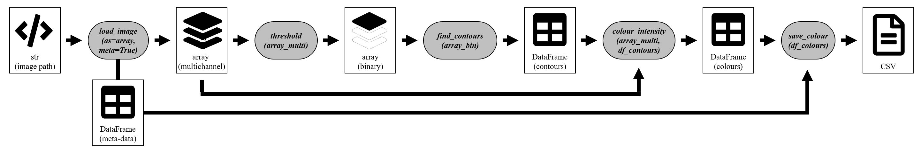
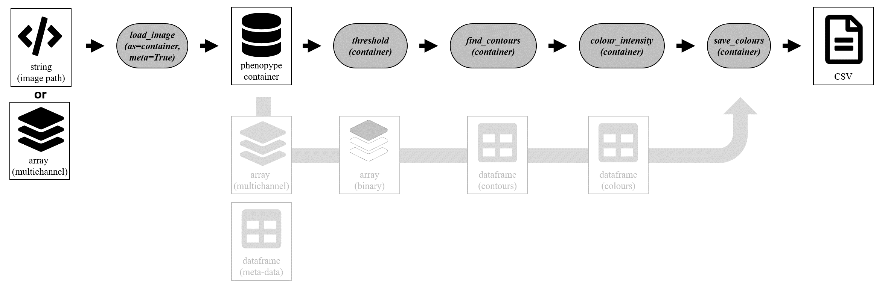
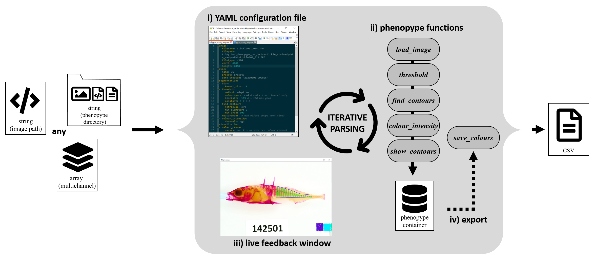

Tutorial 2: Working with phenopype¶
Analysis of scientific images can be an iterative process that may require frequent user input to preprocess images, adjust settings and evaluate the obtained results. In phenopype, users can start this process by identifying the appropriate functions and settings to analyse a series of images (i.e. which segmentation algorithms is to be used). For the actual analysis, users then can switch to a workflow that has higher throughput and is more reproducible. Phenopype offers three different types of workflows that are explained here:
Prototyping - images are loaded as arrays and functions are applied one by one (low throughput, low reproducibility - for workflow-prototyping and evaluation).
Low throughput - images are loaded into phenopype containers, which are then supplied to a function stack (medium throughput, low reproducibility - for single pictures and very small datasets).
High throughput - images are loaded from a phenopype project directory tree, and analyzed with the pype method (high throughput, high reproducibility - standard workflow for medium and large datasets).
For the first two workflow types, users write a phenopype function stack in python code to assemble a CV workflow from five core modules (preprocessing, segmentation, measurement, export, visualization - for a full list check the API reference). This is recommended for users who wish to familiarize themselves with the basic principles of computer vision and to explore the phenopype function library. Output from all intermediate steps is returned from the functions and can be evaluated, which makes these routines are also appropriate for prototyping and testing. For medium and large datasets users should work from a python directory structure in conjunction with the pype-method; phenopype’s high througput workflow.
In the following, all three workflows a demonstrated by analyzing an image of a threespine stickleback (Gasterosteus aculeatus) stained with alizarin red. Traits of interest are bone-plate area and shape, and, within the detected plates, pixel intensities that denote bone-density.

Fig. 1: Workflow demonstration using a stained stickleback. The computer vision functions used to extract the trait of interest (bone-plate area, shape and pixel density) are the same in all cases, but workflows differ in the amount of code necessary and in reproducibility.
1. Prototyping worflow¶
The low throughput workflow starts with the path to an image that is stored on the hard drive. load_image imports the file as a three-channel [1] numpy array (ndarray), together with image meta data (file name, exposure, dimensions, etc.) as a pandas DataFrame. The array gets passed on to the threshold function, which will return a binary array of the same dimensions. This array needs to be passed on to the find_contours function, which will return a dictionary with the detected
contours. This dictionary, together with the original array, can then be passed to the colour_intensity function. This function will collect the average color value from within the perimeter coordinates for each contour and return a pandas dataframe containing those values. Finally, the dataframe can be exported as a csv file with save_colour. By passing on the initially created meta-data, the function will automatically expand the provided columns of meta-info into the exported csv.
[1] to learn more about the basic of Computer Vision check the resources section of the phenopype documentation.

Fig. 2: Schematic of Phenopype’s prototyping workflow
[ ]:
import phenopype as pp
filepath = r"../assets/images/stickleback_side.jpg"
## load image as array, supply image_data (DataFrame containing meta data)
image, image_data = pp.load_image(filepath, df = True, meta=True)
## draw mask
image_masked, mask = pp.preprocessing.create_mask(image, tool="polygon")
## thresholding converts multichannel to binary image
image_bin = pp.segmentation.threshold(image, method="adaptive",
channel="red", blocksize=199,
constant=5, masks=mask)
## perform morphology operations on binarized image
image_morph = pp.segmentation.morphology(image_bin, operation="close",
shape="ellipse", kernel_size=3,
iterations=3)
## detect contours ony binary image
contours = pp.segmentation.find_contours(image_morph, df=image_data,
retrieval="ext", min_area=150)
## draw detected contours onto canvas
image_drawn = pp.visualization.show_contours(image, contours=contours,
df=image_data, df_contours=contours)
## export contours to csv
pp.export.save_contours(contours, dirpath = r"../_temp/output")
## show convas
pp.show_image(image_drawn)
2. Low throughput worflow¶
The load_image function can also load an image into a phenopype container, which is a python class that incorporates loaded images, dataframes, detected contours, intermediate output, etc. so that they are available for inspection or storage at the end of the analysis. The advantage of using containers is that they don’t litter the global environment and namespace, while still containing all intermediate steps (e.g. binary masks or contour DataFrames). Containers can be used manually to
analyze images, but typically they are used automatically within the pype-routine that is part of phenoype’s high throughput workflow (see below).

[ ]:
import phenopype as pp
filepath = r"../assets/images/stickleback_side.jpg"
## load image as a phenopype container which will include all images, dataframes,
## detected contours and intermediate output
container = pp.load_image(filepath, cont=True, meta=True)
## afterwards, same as in the prototyping workflow, functions are applied
## directly to the container
pp.preprocessing.create_mask(container, tool="polygon")
pp.segmentation.threshold(container, method="adaptive", channel="red",
blocksize=199, constant=5) # 3/4
pp.segmentation.morphology(container, operation="close", shape="ellipse",
kernel_size=3, iterations=3) # 5
pp.segmentation.find_contours(container, retrieval="ext", min_area=150) # 6
pp.visualization.show_contours(container) # 6
pp.export.save_contours(container, dirpath = r"../_temp/output")
pp.show_image(container.canvas)
- create mask
3. High throughput worflow¶
The pype routine is phenopype’s standard method to analyse medium and large image datasets, where a function stack is constructed with the human readable yaml syntax (serialization language - for more information see the resources section of the phenopype documentation). Users can execute the pype method on a filepath, an array, or a phenopype directory, which always will trigger three actions: phenpype will i) open the contained yaml configuration with the default OS text editor, ii) parse the contained functions and execute them in the sequence, and iii) open a Python-window showing the processed image. After one parsing iteration, users can evaluate the results and decide to modify the opened configuration file (e.g. either change function parameters or add new functions), and run the pype again, or to terminate the pype and save all results (iv)). The processed image, any extracted phenotypic information, as well as the modified config-file is stored inside the image directory. Together with the raw images, which may be either stored separately or within the directory tree, users can thereby provide the full image analysis pipeline to anyone who wishes to reproduce the obtained results.
Further information
For more detailed information on pype and it’s default behavior, see below.
For more information on how to use the pype in conjunction with phenopype projects please refer to the Phenopype project tutorial.
Check the examples, which include both low and highthroughput code.

[7]:
import phenopype as pp
filepath = r"../assets/images/stickleback_side.jpg"
pp.pype(image=filepath, # input - can be also an array or a phenopype directory
dirpath = r"../_temp/output", ## where output is stored
name="demo", # name of the pype routine, appended to all results-files
preset="demo1" # template for the analysis - you can create your own!
)
------------+++ new pype iteration 2020:03:23 20:28:28 +++--------------
AUTOLOAD
- masks_demo.csv
PREPROCESSING
create_mask
- mask with label mask1 already created (overwrite=False)
SEGMENTATION
blur
threshold
- applying mask: mask1
morphology
find_contours
VISUALIZATION
select_canvas
show_contours
show_masks
- show mask: mask1.
EXPORT
save_contours
- contours saved under ../_temp/output\contours_demo.csv (overwritten).
save_canvas
- canvas saved under ../_temp/output\canvas_demo.jpg (overwritten).
AUTOSAVE
save_masks
- masks not saved - file already exists (overwrite=False).
TERMINATE
[7]:
<phenopype.main.pype at 0x251ca39f108>
3.1 yaml-syntax¶
3.2. pype-behavior¶
[ ]: